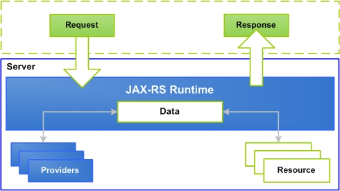
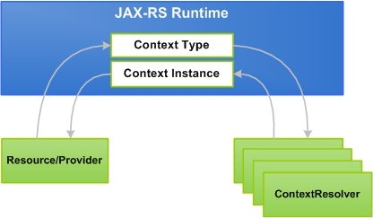
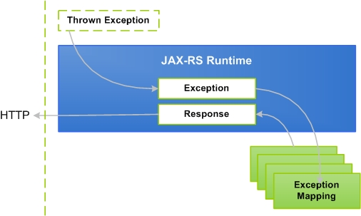
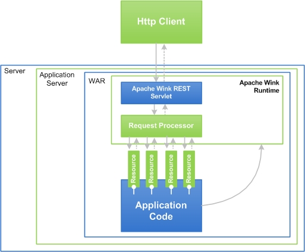
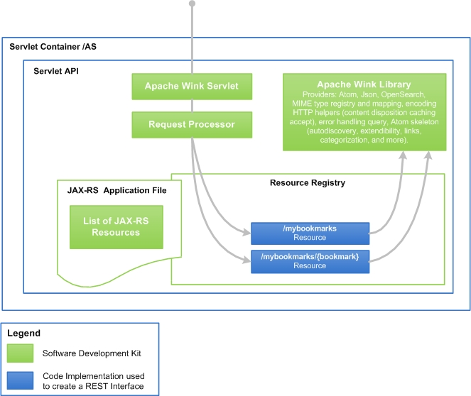
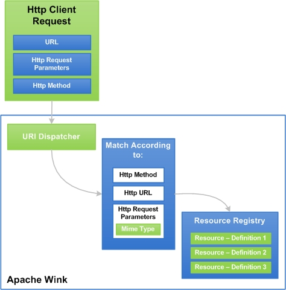
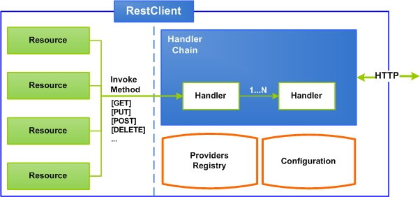
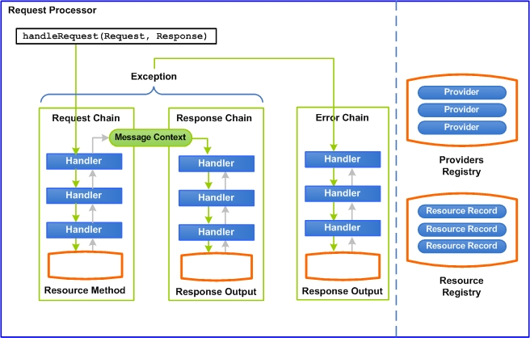
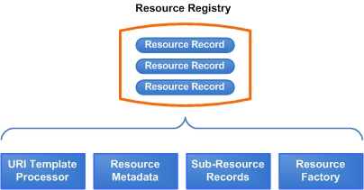

Apache Wink Building Blocks
In order to take full advantage of Apache Wink, a basic understanding of the building blocks that comprise it and their functional integration is required. The following section provides an introduction to the basic concepts and building blocks of Apache Wink, version 1.0. In order to gain in-depth understandings of the building blocks refer to the table of contents where these concepts are expanded and addtional example are used to further illustrate the Apache Wink and JAX-RS SDK technologies.
This section contains the following topics:
Service Implementation Building Blocks
- Resource
- Providers
- URI Dispatching
- Assets
- Annotations
- URL Handling
- HTTP Methods - GET, POST, PUT, DELETE and OPTIONS
- Basic URL Query Parameters
- Apache Wink Building Blocks Summary
Client Components Building Blocks
- RestClient Class
- Resource Interface
- ClientRequest Interface
- ClientResponse Interface
- ClientConfig Class
- ClientHandler Interface
- InputStreamAdapter Interface
- OutputStreamAdapter Interface
- EntityType Class
The Apache Wink Runtime
Service Implementation Building Block Overview
As mentioned in the "Apache Wink Introduction" section, Apache Wink 1.0 reflects the design principles of a REST web service. It does so by providing the developer with a set of java classes that enable the implementation of "Resources", "Representations" and the association between them. Wink 1.0 also enables the developer to define the resource URI and the "Uniform methods" that are applicable to the resource.
Resource
A "resource" represents a serviceable component that enables for the retrieval and manipulation of data. A "resource class" is used to implement a resource by defining the "resource methods" that handle requests by implementing the business logic. A resource is bound or anchored to a URI space by annotating the resource class with the @Path annotation.
Providers
A provider is a class that is annotated with the @Provider annotation and implements one or more interfaces defined by the JAX-RS specification. Providers are not bound to any specific resource. The appropriate provider is automatically selected by the Apache Wink runtime according to the JAX-RS specification. Apache Wink supplies many providers, however, application developers may supply their own which take precedence over any provider in the default runtime.
There are three types of providers defined by the JAX-RS specification:
- Entry Providers
- Context Providers
- Exception Mapping Provider
Entity Provider
An "Entity Provider" is a class that converts server data into a specific format requested by the client and/or converts a request transmitted by the client into server data. For instance, a String entity provider can turn request entities (message bodies) over the wire into a Java type (java.lang.String). Entity providers can also turn native Java types such as a java.lang.String into an appropriate response entity. An entity provider can be restricted to support a limited set of media types using the @javax.ws.rs.Produces and @javax.ws.rs.Consumes annotations. An entity provider is configured to handle a specific server data type by implementing the javax.ws.rs.ext.MessageBodyWriter and/or javax.ws.rs.ext.MessageBodyReader interfaces.
Figure 2: Entity Provider Diagram

Context Provider
Context providers are used to supply contexts to resource classes and other providers by implementing the javax.ws.rs.ext.ContextResolver interface. For example, if a custom JAXBContext is required to serialize or deserialize JAXB objects, an application can provide a ContextResolver that will return a specific instance of a JAXBContext. Context providers may restrict the media types that they support using the @javax.ws.rs.Produces annotation.
Figure 3: Context Provider Diagram

Exception Mapping Provider
Exception mapping providers map exceptions into an instance of a javax.ws.rs.core.Response by implementing the javax.ws.rs.ext.ExceptionMapper interface. The Response objects can contain response information such as status codes, HTTP headers, and a response entity (message body). When a resource method throws an exception, the runtime will try to find a suitable ExceptionMapper to "translate" the exception to an appropriate Response object.
Figure 4: Exception Mapping Provider Diagram

URI Dispatching
Designing an efficient REST web service requires that the application developer understands the resources that comprise the service, how to best identify the resources, and how they relate to one another.
RESTful resources are identified by URIs in most cases related resources have URIs that share common path elements.
Figure 5: Apache Wink Logic Flow

Apache Wink Logic Flow
Figure 5 illustrates the Apache Wink logic flow. The HTTP request sent by the client invokes the "Apache Wink REST Servlet". The REST servlet uses the "Request Processor" and the request URI in order to find, match and invoke the correct resource method.
Bookmarks Example
Throughout this document, various project examples are used in order to describe the functionality and processes that comprise the Apache Wink.
In order to explain the REST design principles used in the Apache Wink this developer guide refers to the "Bookmark" example project found in the examples folder located in the Apache Wink distribution.
Refer to the code (using an IDE application) in the example in conjunction with the following explanations and illustrations in this developer guide.
Apache Wink Servlet and Request Processor
Figure 6: Apache Wink REST Servlet and Request Processor for the Bookmark Services

Server and Request Processor
Figure 6 shows the Apache Wink servlet and request Processor concept in the context of the application server. In the "Bookmarks" example in Figure 6 there are two Resources, the first Resource is associated with the /mybookmarks URI and manages the bookmarks collection, the second resource is associated with the /mybookmarks/{bookmark} Resources and manages an individual bookmark within the collection.
The Resources' defined by the web service and managed by Apache Wink are referred to as "URI space". The Resources space is the collection of all URI's that exist in the same context. Figure 6 shows the URI space that contains /mybookmarks and /mybookmarks/{bookmarks}.
URI Space
The Bookmarks service URI space consists of the following URI space items and detailed descriptions about their context and functionality.
Table 1: URI Management
| URI space Item |
Description |
|---|---|
| /Bookmark/rest |
This URI is the root context of the bookmark service and the entry point of the URI space of the service. An HTTP GET request to this URI returns a "Service Document" which is automatically generated by Apache Wink. The service document provides information about all available collections in the URI space. |
| /Bookmark/rest /mybookmarks |
This URI is associated with a collection of bookmarks resources. Clients use the HTTP GET method in order to retrieve a representation of the collection and HTTP POST method in order to create a new item in the collection. |
| /Bookmark/rest /mybookmarks/{bookmark} | This URI template is associated with a single bookmark resource. Clients use the HTTP GET method in order to retrieve a representation of the resource, HTTP PUT method is used in order to update the resource and HTTP DELETE method is used in order to delete the resource. |
Assets
Assets are classes that contain "web service business logic" implemented by the developer. Each Asset is associated with one or more URI. The Apache Wink dispatcher invokes the Asset, which is associated with the URI found in the HTTP request.
An Asset class can implement one or more methods, each method is associated with a single HTTP method (GET, HEAD, POST, PUT, DELETE etc). The methods can be associated with a MIME type of a produced representation. Methods that handle HTTP verbs of requests with a body (such as PUT, POST) are also associated with the MIME type of the HTTP request.
The Asset class can be registered to the Apache Wink using the "Spring context xml" or by using a registration API.
| Spring Context Configuration For further information regarding the Spring Context, refer to 5.5 Spring Integration in section 5 Apache Wink Server. |
Annotations
Annotations are a special text notations, or metadata, added to Java version 1.5. Annotations in Java source code can affect both compilation and runtime behavior of the resulting Java classes.
JAX-RS is implemented by the use of annotations that are defined in the JAX-RS specification. Apache Wink provides a set of additional annotations that enrich the functionality of the JAX-RS enabled application.
The following table describes the additional Apache Wink annotations:
| Annotation |
Precedes |
Description |
|---|---|---|
| @Workspace |
Resource |
Associate a "Collection Resource" with a workspace element and collection elements in an APP Service Document |
| @Scope |
Resource /Provider |
Defines the default lifecycle behavior for resources and providers, and the option for controlling the lifecycle through the javax.ws.rs.core.Application class |
| @Parent |
Resource |
Provides the ability to define a base template URI for the URI specified in a resources @Path annotation |
| @Asset |
Class |
Used by the Apache Wink runtime in order to identify an entity as an Asset |
URL Handling
The Apache Wink receives HTTP requests and then dispatches a wrapped HTTP request to the appropriate Resource method.
The HTTP request is match to the Resource method based on the HTTP request parameters, the Resource method definitions and the MIME type.
Figure 7: URL Request Handling

Request Handling
Figure 7 demonstrates the HTTP Client request path to the URI dispatcher, once the dispatcher receives the request it is then matched according to the HTTP method, URL and MIME type and finally the Resource registry definition.
HTTP Methods - GET, POST, PUT, DELETE and OPTIONS
The common HTTP 1.1 methods for the Apache Wink are defined in the following section. This set of methods can be expanded.
Method Usage
Table 3: HTTP Methods
| Method |
Safe |
Idempotent |
Cacheable |
|---|---|---|---|
| GET |
X |
X |
X |
| HEAD |
X |
X |
X |
| PUT |
X |
||
| POST |
* |
||
| DELETE |
X |
||
| OPTIONS |
Key - X
- Safe - does not affect the server state
- Idempotent - a repeated application of the same method has the same effect as a single application
- Cacheable - a response to a method is cacheable if it meets the requirements for HTTP caching
- * - Responses to this method are not cacheable, unless the response includes an appropriate Cache-Control or Expires header fields. However, the 303 response can be used to direct the user agent to retrieve a cacheable resource.
GET
The GET method is used to retrieve information from a specified URI and is assumed to be a safe and repeatable operation by browsers, caches and other HTTP aware components. This means that the operation must have no side effects and GET method requests can be re-issued.
HEAD
The HEAD method is the same as the GET method except for the fact that the HEAD does not contain message body.
POST
The POST method is used for operations that have side effects and cannot be safely repeated. For example, transferring money from one bank account to another has side effects and should not be repeated without explicit approval by the user.
The POST method submits data to be processed, for example, from an HTML form, to the identified resource. The data is included in the body of the request. This may result in the creation of a new resource or the updates of existing resources or both.
PUT
The PUT method requests that the enclosed entity be stored under the supplied Request-URI. If the Request-URI refers to an already existing resource, the enclosed entity should be considered as a modified version of the one residing on the origin server.
If the Request-URI does not point to an existing resource, and that URI is capable of being defined as a new resource by the requesting user agent, the origin server can create the resource with that URI.
DELETE
The DELETE method requests that the origin server delete the resource identified by the Request-URI. This method can be overridden on the origin server.
The client cannot be guaranteed that the operation has been carried out, even if the status code returned from the origin server indicates that the action has been completed successfully.
OPTIONS
The OPTIONS method represents a request for information about the communication options available on the request/response chain identified by the Request-URI.
This method allows the client to determine the options and/or requirements associated with a resource, or the capabilities of a server, without implying a resource action or initiating a resource retrieval.
Basic URL Query Parameters
A URL parameter is a name and value pair appended to a URL. The parameter begins with a question mark "?" and takes the form of name=value.
If more than one URL parameter exists, each parameter is separated by an ampersand "&" symbol. URL parameters enable the client to send data as part of the URL to the server.
When a server receives a request and parameters are appended to the URL of the request, the server uses these parameters as if they were sent as part of the request body. There are several predefined URL parameters recognized by Apache Wink when using Wink providers. The following table lists the parameters commonly used in web service URLs. These special URL parameters are defined in the "RestConstants" class.
Query Parameters
Table 4: URL Parameters
| Parameter |
Description |
Value |
|---|---|---|
| alt |
Provides an alternative representation of the specified MIME type. Apache Wink recognizes this as a representation request of the highest priority. |
MIME type, e.g. "text%2Fplain" |
| absolute-urls |
Indicates to Apache Wink that the generated links in the response should be absolute, mutual exclusive with the relative-urls parameter |
NONE |
| relative-urls |
Indicates to Apache Wink that the generated links in the response should be relative, mutual exclusive with the absolute-urls parameter |
NONE |
| callback |
Wrap javascript representation in callback function, is relevant when requested with an application/json MIME type. |
name of callback function. For example, "myfunc" |
Combining URL Parameters
A single URL can contain more than one URL parameter, example "?alt=text%2Fjavascript &callback=myfunc"(where "%2F" represents escaped "/").
Apache Wink Building Blocks Summary
The previous section "Service Implementation Building Blocks" outlines the basic precepts and building blocks that comprise the service side of Apache Wink.
In order to understand the relationship between the building blocks that comprise Apache Wink a set of example applications have been designed and built that provide a reference point that demonstrate a rudimentary understanding about the functionality of Apache Wink.
Apache Wink Examples
The following examples applications are used in this "Apache Wink Developer Guide".
- Bookmarks
- HelloWorld
- QADefects
Bookmarks Project
This developer guide uses the bookmarks example application in order to describe the logic flow process within Apache Wink.
Refer to the comments located in the "Bookmarks" example application code for in-depth explanations about the methods used to build the bookmarks application.
HelloWorld Project
Complete the step-by-step "HelloWorld" tutorial in chapter 3 "Getting Started with Apache Wink" and then follow the installation instructions on page xx, in order to view the "Bookmarks" example application from within the Eclipse IDE.
QADefects
The QADefects example application illustrates the advanced functionality of Apache Wink by implementing most of the features provided by the Apache Wink (Runtime) framework.
Apache Wink Client Component Basics Overview
The Apache Wink Client interacts with REST Web-Services. It maps REST concepts to Java classes and encapsulates underlying REST related standards and protocols, as well as providing a plug-in mechanism for raw HTTP streaming data manipulation. This mechanism also provides the ability to embed cross application functionality on the client side, such as security, compression and caching.
Figure 8: Apache Wink Client Simplified Breakdown

Figure 8: The illustration shows the basic elements that comprise the Apache Wink Client. The Apache Wink Client utilizes the providers mechanism defined by the JAX-RS specification to perform reading and writing of java objects. The Apache Wink Client is pre-initialized with the same providers that are predefined by the Apache Wink JAX-RS server implementation.
Apache Wink Client Components
The Apache Wink Client is comprised of several key elements that together create a simple and convenient framework for the consumption of REST based web services. The client is an abstraction of REST concepts modeled into simple java classes that encapsulate the underlying HTTP protocol, used for the service invocation.
The Apache Wink Client uses the java HttpURLConnection class for the HTTP invocation. The Apache Wink Client also provides a module that utilizes the Apache HTTP Client instead of the default HttpURLConnection class.
The following section provides an overview of the key elements and classes that comprise the Apache Wink Client.
RestClient Class
The RestClient class is the central access point to Apache Wink Client. It provides the user with functionality that enables the creation of new Resource instances. The RestClient provides the user with the ability to set different configuration parameters and custom JAX-RS providers and propagates them to the created resources.
Resource Interface
The Resource interface represents a single web resource located at a specific URL, enabling for the manipulation and retrieval of the resource by the invocation of different HTTP methods on the resource instance. The resource interface is implemented following the Builder design pattern so method calls can be easily aggregated and in order to enable easy construction of requests and setting of the resource properties prior to invocation.
ClientRequest Interface
The ClientRequest interface represents a request issued by invoking any one of the invocation methods on a Resource. An instance of a ClientRequest is created at the beginning of an invocation and passed to all the client handlers defined on the client that was used for the invocation.
ClientResponse Interface
The ClientResponse interface represents an HTTP response that is received after invoking any one of the invocation methods on a Resource. An instance of a ClientResponse is created by the ConnectionHandler at the end of the handler chain, and is returned from every handler on the chain.
ClientConfig Class
The ClientConfig class provides client configuration when instantiating a new RestClient. The ClientConfig is implemented using the Builder design pattern so method calls can be easily aggregated. Custom Providers and client Handlers are set on the ClientConfig instance prior to the creation of the RestClient.
ClientHandler Interface
Client handlers are used to incorporate cross invocation functionality. The ClientHandler interface is implemented by client handlers, and the handle() method is invoked for every request invocation in order to allow the handler to perform custom actions during the request invocation.
InputStreamAdapter Interface
The InputStreamAdapter interface is used to wrap the response input stream with another input stream in order to allow the manipulation of the response entity stream. The adapt() method is called after reading the response status code and response headers, and before returning to the ClientResponse to the handlers on the chain.
OutputStreamAdapter Interface
The OutputStreamAdapter interface is used to wrap the request output stream with another output stream to allow the manipulation of the request entity stream. The adapt() method is called before writing the request headers to allow the adapter to manipulate the request.
EntityType Class
The EntityType is used to specify the class type and the generic type of responses. Typically, an anonymous "EntityType" instance is created in order to specify the response type, as is shown in the following code example:
Resource resource = client.resource(uri); List<String> list = resource.get(new EntityType<List<String>>() {});
ApacheHttpClientConfig Class
The "ApacheHttpClientConfig" Configuration object configures the Apache Wink Client to use the Apache HttpClient as the underlying HTTP client. The following code snippet, demonstrates the typical usage:
// creates the client that uses Apache DefaultHttpClient as the underlying Http client. RestClient client = new RestClient(new ApacheHttpClientConfig(new DefaultHttpClient())); // creates the resource Resource resource = client.resource("http://myhost:80/my/service"); // invokes a GET method on the resource and receives the response entity as a string String entity = resource.get(String.class); ...
The Apache Wink Runtime
The Apache Wink runtime is deployed on a JEE environment and is configured by defining the RestServlet in the web.xml file of the application. This servlet is the entry point of all the HTTP requests targeted for web services, and passes the request and response instances to the Wink engine for processing.
Figure 9: Apache Wink Request Processor Architecture

The diagram illustrates the core components of the Apache Wink runtime. The Wink engine is the RequestProcessor. It builds an instance of a MessageContext with all of the required information for the request and passes it through the engine handler chains. The handler chains are responsible for serving the request, invoking the required resource method and finally generating a response.
In case of an error, the RequestProcessor invokes the Error chain with the generated exception for producing the appropriate response.
The Apache Wink runtime maintains providers and resources in two registries, the "providers registry" and the "resource registry" utilizing them during request processing.
Request Processor
The RequestProcessor is the Apache Wink engine, that is initialized by the RestServlet and is populated with an instance of a DeploymentConfiguration.
When a request is passed to the handleRequest() method of the RequestProcessor, a new instance of a MessageContext is created.
The MessageContext contains all of the information that is required for the Wink runtime to handle the request. The RequestProcessor first invokes the Request Handler Chain and then the Response Handler Chain.
If an exception occurs during any stage of the request processing, the RequestProcessor invokes the Error Handler Chain for processing the exception.
Deployment Configuration
The Apache Wink runtime is initialized with an instance of a Deployment Configuration. The Deployment Configuration holds the runtime configuration, including the handler chains, registries, configuration properties.
The Deployment Configuration is initialized with an instance of a JAX-RS Application used for obtaining user resources and providers.
Customization of the Handlers Chain
The handler chain is customized by extending the org.apache.wink.server.handlers.HandlersFactory class, overriding specific methods and specifying the new class in the web.xml file of the application.
In order to specify a different HandlersFactory class instead of the default handlers, specify an init parameter for a custom properties file to be loaded by the RestServlet. Then, the value of the wink.handlersFactoryClass property must be set as the fully qualified name of the customized handlers class in the properties file.
<servlet> <servlet-name>restSdkService</servlet-name> <servlet-class> org.apache.wink.server.internal.servlet.RestServlet </servlet-class> <init-param> <param-name>propertiesLocation</param-name> <param-value>path/to/my-wink-properties.properties</param-value> </init-param> </servlet>
In the my-wink-properties properties file:
wink.handlersFactoryClass=org.apache.wink.MyCustomHandlersFactory
See the JavaDoc for the HandlersFactory API.
Handler Chains
The handler chain pattern is used by the Wink runtime for implementing the core functionalities.
There are three handler chains utilized by the Wink runtime:
- RequestHandlersChain
- ResponseHandlersChain
- ErrorHandlersChain
| Handler Chains For further information regarding the "Handler Chains", refer to section 5 Apache Wink Server, 5.7 Handler Chain - Runtime Extension |
Registries
The Apache Wink runtime utilizes two registries for maintaining the JAX-RS resources and providers. Both registries maintain their elements in a sorted state according to the JAX-RS specification for increasing performance during request processing. In addition to the JAX-RS specification sorting, Wink supports the prioritization of resources and providers.
| Resources and Providers Prioritization For further information regarding *"Resources and Providers Prioritization", refer to the section 5.1 Registration and Configuration. |
Resource Registry
Firgure 10: Resource Registry Architecture

The resources registry maintains all of the root resources in the form of Resource Records.
A Resource Record holds the following:
- URI Template Processor - represents a URI template associated with a resource. Used during the resource matching process.
- Resource Metadata - holds the resource metadata collected from the resource annotations.
- Sub-Resource Records - records of all the sub-resources (methods and locators) collected from the sub-resource annotations.
- Resource Factory - a factory that retrieves an instance of the resource in accordance to the creation method defined for the resource.
Possible creation methods include:-
- singleton
- prototype
- spring configuration
- user customizable
-
{kind=link}
{kind=link}
{kind=link}
{kind=link}
{kind=link}
{kind=link}
{kind=link}
{kind=link}
{kind=link}
{kind=link}
{kind=link}
{kind=link}